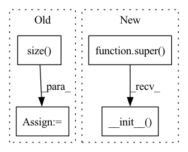

Pattern ID :30416
Before Change
self._dtype = torch.float32
self._stride = stride
num_anchors = self._anchors.size( 0)
grid_x = self._cached_grids[0]
grid_y = self._cached_grids[1]
grids = self.generate_grids(grid_y, grid_x,
device=self._device, dtype=self._dtype).unsqueeze(0).repeat(num_anchors,1,1,1)
wh = torch.repeat_interleave(self._anchors, grid_y*grid_x, dim=0).reshape(num_anchors, grid_y, grid_x, 2)
prior_boxes = torch.cat([grids, wh], dim=-1)
prior_boxes[:, :, :, :2] += .5 // adjust to center
prior_boxes *= self._strideAfter Change
class Anchor(nn.Module):
def __init__(self, anchors: List, img_size: int, stride: int):
super().__init__()
// anchors: between 0 < ? < 1
// pylint: disable=not-callable
self.anchor_sizes = (torch.tensor(anchors) * img_size) / stride // between 0 < ? < max_grid
self.stride = strideIn pattern: SUPERPATTERN
Frequency: 3
Non-data size: 4
Instances Fragment ID: 89958382
Project Name: borhanmorphy/fastface
Commit Name: 90145f768cd9599edb0618b3faf3a69310ff82f8
Time: 2021-03-12
Author: borhano.f.42@gmail.com
File Name: fastface/arch/yolov4/anchor.py
M Class Name: Anchor
N Class Name: Anchor
M Method Name: __init__(4)
N Method Name: __init__(4)
M Parent Class: nn.Module
N Parent Class:
M File Name: fastface/arch/yolov4/anchor.py
N File Name: fastface/arch/yolov4/anchor.py
M Start Line: 10
M End Line: 30
N Start Line: 12
N End Line: 19
Before Change
self.metric = metric
self.data = data
F_bin, T_bin = data.size()
self.F_bin, self.T_bin = F_bin, T_bin
self.basis = torch.rand(F_bin, K) + 1
self.activation = torch.rand(K, T_bin) + 1After Change
K: number of bases
metric: "EU", "KL", "IS"
super().__init__()
assert metric in __metrics__, "metric is expected any of {}, given {}".format(metric, __metrics__)
self.K = K Fragment ID: 89958383
Project Name: tky823/dnn-based_source_separation
Commit Name: be69de1a0d34c86d712a86987121f09e75847e6a
Time: 2020-12-25
Author: 40362510+tky823@users.noreply.github.com
File Name: src/algorithm/nmf.py
M Class Name: NMF
N Class Name: NMF
M Method Name: __init__(3)
N Method Name: __init__(4)
M Parent Class: nn.Module
N Parent Class:
M File Name: src/algorithm/nmf.py
N File Name: src/algorithm/nmf.py
M Start Line: 7
M End Line: 22
N Start Line: 15
N End Line: 15
Before Change
model_name, slow_but_exact=False, tp_parallel=True
)
config.pad_token_id = 3
self.num_heads = config.n_head // self.process_group.size()
// The flag below controls whether to allow TF32 on matmul. This flag defaults to False
// in PyTorch 1.12 and later.
torch.backends.cuda.matmul.allow_tf32 = TrueAfter Change
)
self.model = model.eval().to(dtype)
torch.distributed.barrier(group=self.process_group)
super(BLOOMSharded, self).__init__(tokenizer=tokenizer, num_heads=config.n_head // self.process_group.size(),
device=device)
@staticmethod
def load_weights(
model, Fragment ID: 89958388
Project Name: huggingface/text-generation-inference
Commit Name: c5665f5c8be801237b0f7bac34da42371a43b9ad
Time: 2022-11-04
Author: 23298448+OlivierDehaene@users.noreply.github.com
File Name: server/text_generation/models/bloom.py
M Class Name: BLOOMSharded
N Class Name: BLOOMSharded
M Method Name: __init__(3)
N Method Name: __init__(3)
M Parent Class: Model
N Parent Class: BLOOM
M File Name: server/text_generation/models/bloom.py
N File Name: server/text_generation/models/bloom.py
M Start Line: 330
M End Line: 349
N Start Line: 40
N End Line: 82